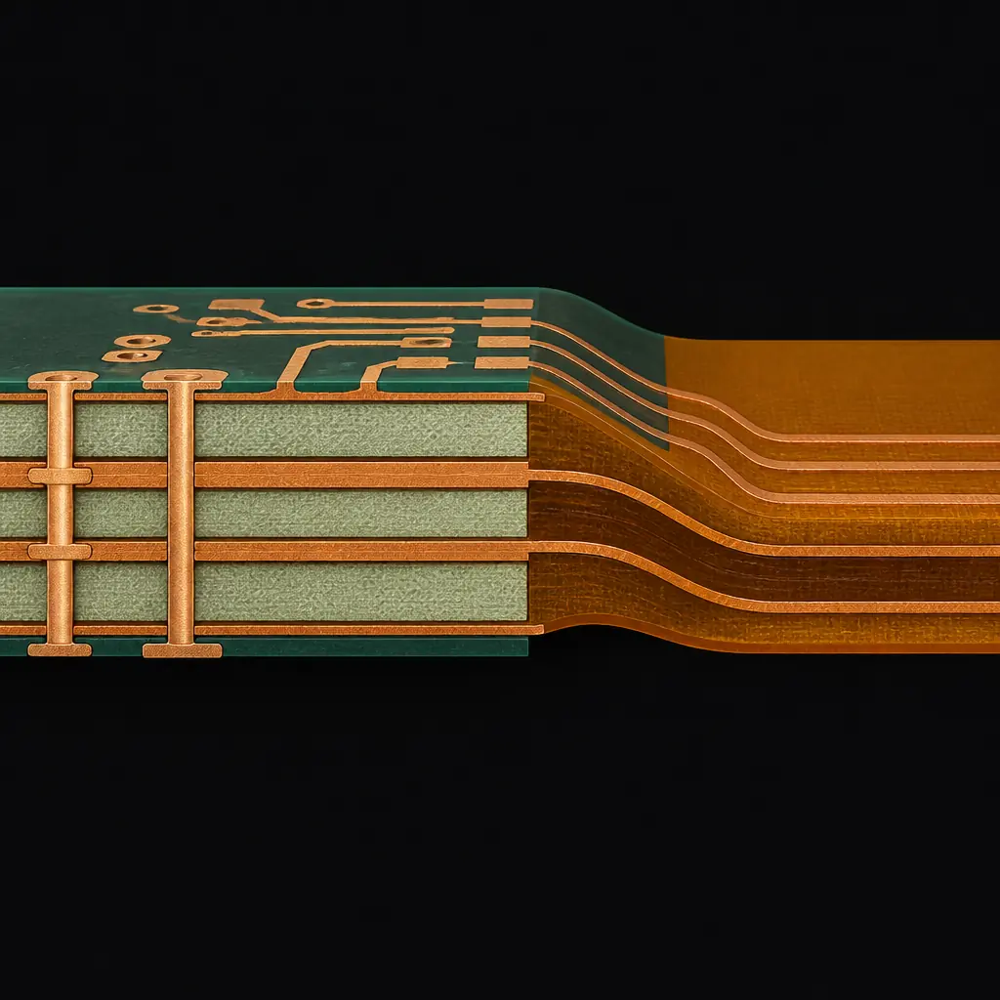
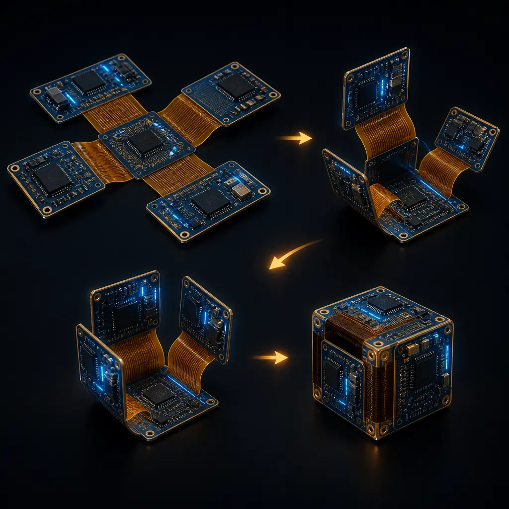
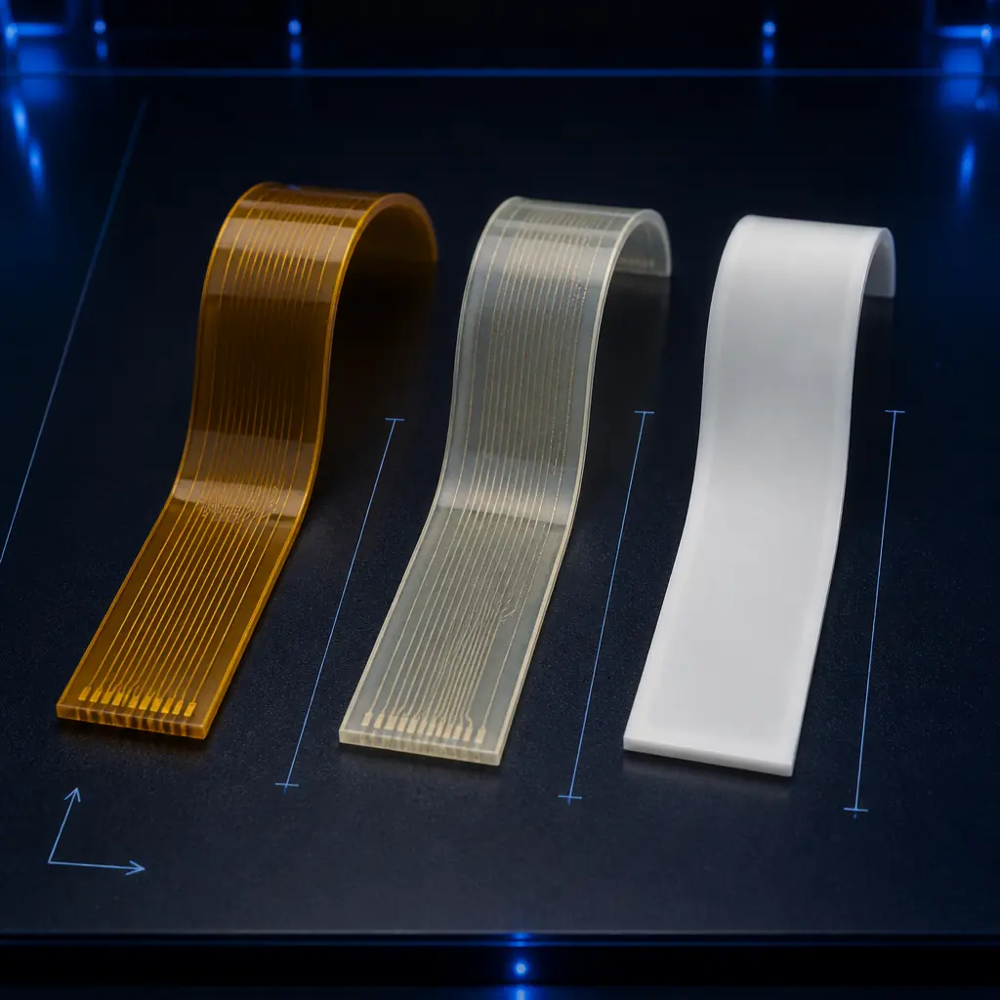
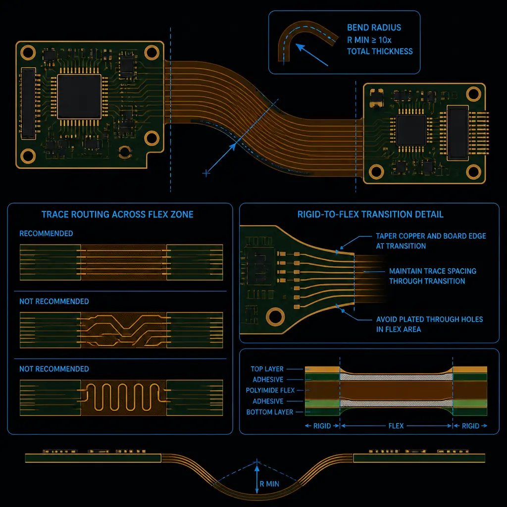
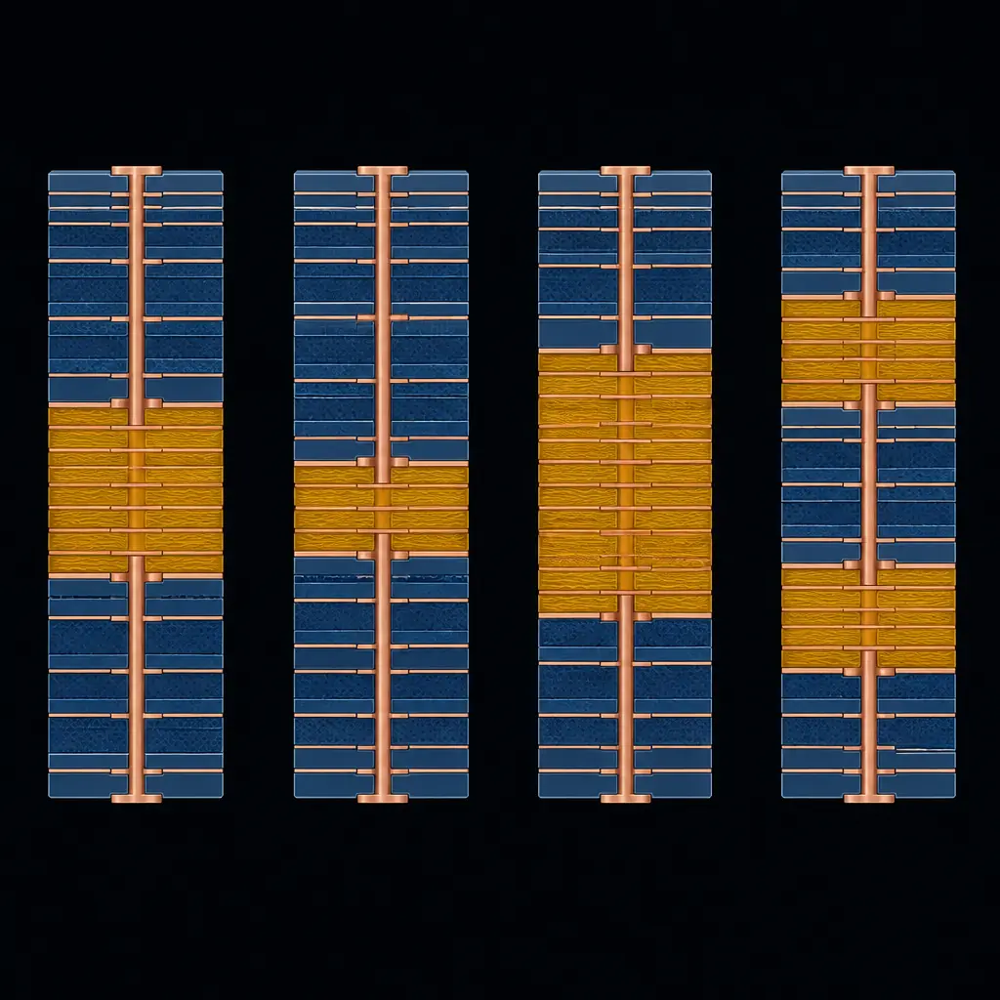

A rigid-flex PCB is not a flex circuit glued to a rigid board. It's a single, unified structure where rigid and flexible regions share continuous copper layers across the transition zone — no connectors, no solder joints, no potential points of mechanical failure between the rigid and flex sections. This single fact explains why rigid-flex dominates in applications where a connector failure is measured in millions of dollars (aerospace), human lives (medical implants), or warranty claims (automotive).
The global rigid-flex PCB market is projected to reach $5.8B by 2028, growing at 6.8% CAGR, driven by wearable electronics, EV battery management systems, and minimally invasive medical devices. At Huaxing PCBA, we manufacture rigid-flex boards from 2-32 layers with polyimide and LCP flex materials, using materials including Rogers, High-Tg FR-4, and PTFE for the rigid sections, with full IPC-6013 Class 3 capability. Our facility handles the full rigid-flex stack from laminate selection through assembly and test.

Rigid-Flex vs. Flex vs. Rigid: When Each Makes Sense
Not every design that bends needs rigid-flex. The decision tree is straightforward once you understand what each technology optimizes for:
| Characteristic | Rigid-Flex | Flex Circuit | Rigid + Connectors |
|---|---|---|---|
| Typical layers | 4-20 total | 1-8 flex layers | 2-32 per board |
| Weight (relative) | 60% lighter | 75% lighter | Baseline (100%) |
| Interconnect points | 0 connectors | ZIF/tab connectors | Board-to-board connectors |
| Relative cost (prototype) | 3-5× rigid | 2-4× rigid | 1× (baseline) |
| Relative cost (10k+ volume) | 1.5-2.5× rigid | 1.2-2× rigid | 1× + connector cost |
| Dynamic flex cycles | 10⁵-10⁷ cycles | 10⁶-10⁸ cycles | Varies by connector |
| Component mounting | Rigid sections only | Stiffener required | Anywhere on rigid board |
Decision Rule: Use rigid-flex when your design has ≥2 rigid sections that need to fold into a 3D enclosure. Use flex circuits when the entire assembly must flex dynamically (printer head cables, robotic joints). Use rigid boards with connectors when cost is the primary constraint and assembly space is not. The crossover point where rigid-flex becomes cheaper than rigid+connectors is typically 5,000-10,000 units — below that volume, connector cost dominates; above it, rigid-flex's elimination of connector assembly labor pays back.

Material Selection: The Foundation of Rigid-Flex Reliability
Material selection in rigid-flex design is not a single choice — it's a system of interdependent decisions where each material constrains the others. The three primary material domains are:
1. Flex Dielectric: Polyimide vs. LCP vs. PTFE
Polyimide (PI) is the workhorse flex material for 90% of rigid-flex designs. It offers excellent thermal stability (Tg >250°C), chemical resistance to soldering temperatures, and proven reliability across decades of use. Standard thicknesses: 25µm (1 mil) and 50µm (2 mil). At Huaxing PCBA, we stock both in volume for 2-32 layer rigid-flex builds.
Liquid Crystal Polymer (LCP) is gaining ground for high-frequency applications above 10 GHz. Its dielectric constant (Dk ~2.9 vs. polyimide's 3.4) and lower moisture absorption (0.04% vs. polyimide's 1.8%) make it the preferred choice for millimeter-wave rigid-flex in 5G and automotive radar. The trade-off: LCP costs roughly 2-3× more than polyimide and requires specialized lamination processes that fewer factories offer.
PTFE-based flex is used almost exclusively for microwave applications above 20 GHz. The material is expensive (5-10× polyimide) and challenging to process (requires plasma treatment for through-hole plating adhesion), but when signal loss at 28 GHz is the design constraint, no other flex material approaches its performance. See our impedance control guide for how material Dk/Df affects signal integrity in rigid-flex designs.
2. Rigid Dielectric: FR-4, High-Tg, or RF Laminates
The rigid sections of a rigid-flex board use standard PCB laminates — but the choice is constrained by the flex lamination process. Because rigid and flex layers are laminated together in a single press cycle, the rigid material's cure temperature must be compatible with the flex material's thermal budget. Standard FR-4 with Tg 130°C laminates at ~180°C, which is well within polyimide's tolerance. Rogers 4350B laminates at ~190°C, also compatible. However, some ceramic-filled hydrocarbon laminates require 210°C+ cure, which can degrade polyimide adhesion if not carefully profiled.
For most designs, High-Tg FR-4 (Tg 170-180°C) in the rigid sections provides an excellent balance of cost and thermal compatibility with polyimide flex layers. Our manufacturing process uses matched CTE materials across rigid-flex transitions to minimize warpage during reflow — a common failure mode in poorly designed rigid-flex stacks. Read our materials guide for a full comparison of rigid laminate options.
3. Coverlay vs. Soldermask on Flex Sections
Flex sections cannot use traditional liquid photoimageable soldermask — it cracks under bending. Instead, a polyimide coverlay film (typically 25µm or 50µm) is laminated over the flex copper layers, with openings laser-cut for component pads and vias. The coverlay adhesive choice matters: acrylic adhesive is standard, but epoxy adhesive offers better chemical resistance for harsh environments. For dynamic flex applications, the coverlay opening must include a 0.5-1.0mm fillet radius at pad transitions to prevent stress concentration.

Design Rules That Prevent Field Failures
Rigid-flex design rules are not suggestions — they are physics. Violating them produces boards that pass electrical test but fail after 100 flex cycles in the field. Here are the rules that matter:
Bend Radius: Minimum 10× Flex Thickness (Static), 20× (Dynamic)
For a 2-layer flex section with 25µm polyimide between 18µm copper layers (total flex thickness ~0.15mm), the minimum static bend radius is 1.5mm and dynamic is 3.0mm. Tighter bends induce copper work-hardening and eventual cracking. The bend radius is measured to the inside surface of the flex — not the centerline. IPC-2223 provides detailed guidelines; we apply Class 3 criteria (more conservative than Class 2) for all automotive and medical rigid-flex builds.
Trace Routing in Flex: Cross the Bend Perpendicular, Not Parallel
Copper traces crossing the bend zone should run perpendicular to the bend axis, not parallel. Parallel traces experience maximum tensile/compressive strain across their entire length. Perpendicular traces experience strain only at the transition points. Where traces must run parallel to the bend (unavoidable in some designs), stagger them across multiple flex layers rather than concentrating them on one — and never place a via within 1.5mm of the bend zone.
Rigid-to-Flex Transition: Tapered Stiffener, Not Abrupt Edge
The boundary where rigid FR-4 meets flexible polyimide is the highest-stress region in any rigid-flex design. An abrupt 90° transition concentrates all bending stress at a single line. A tapered transition (rigid thickness ramps down over 1.5-3.0mm) distributes stress over a larger area. For designs exceeding 500 flex cycles, we add a bead of flexible epoxy at the transition edge as a strain relief — a technique validated across our 150+ rigid-flex customers.
Copper Pattern: Hatched Ground Planes, Not Solid
Solid copper planes in flex sections severely restrict bendability. Use cross-hatched copper patterns (typically 60-70% copper coverage) for ground and power planes in flex areas. The hatch angle should be 45° to the bend axis for maximum flexibility. For controlled-impedance flex sections, the hatch pattern must be modeled in a 3D EM simulator — a solid-plane assumption will underestimate impedance by 5-15%. Our impedance control guide covers modeling for flex geometries.
Via Placement: No Vias in Flex Zone, Minimum 1mm from Transition
Plated through-holes in the flex zone create stress risers that initiate copper cracking within 50-100 flex cycles. Keep all vias in rigid sections. If a via must be placed near the transition, use teardrop pad shapes (not circular pads) and extend the annular ring by 0.15mm minimum. Via-in-pad with filled and capped microvias in rigid sections is acceptable — see our HDI technology guide for via type selection by layer stack.

Layer Stack-Up Configurations
Rigid-flex stack-up design is where the cost-performance trade-off is decided. The most common configurations, from simplest to most complex:
Type 1 — Single flex layer between rigid sections (4-layer equivalent): The simplest and cheapest rigid-flex configuration. One polyimide core with copper on both sides, bonded between two rigid FR-4 sections. Total layer count: typically 4-6 (2 rigid + 1 flex + 1 rigid, with inner copper layers). Use case: simple bend-to-fit applications where the flex doesn't carry controlled-impedance signals. Cost: approximately 2-3× an equivalent rigid 4-layer board.
Type 2 — Multi-layer flex with blind/buried vias (8-12 layer equivalent): Two or more flex layers with plated through-holes connecting them, embedded between rigid sections. Enables controlled-impedance differential pairs in the flex section. This is the most common configuration for products requiring signal integrity across the bend — smartphone hinges, laptop display connections, medical ultrasound probes. Cost: 3-5× rigid equivalent.
Type 3 — Asymmetric rigid-flex (different layer counts on each rigid side): One rigid section might be 8 layers (dense BGA processor board) and the other 4 layers (connector/power board), connected by a 2-layer flex. This is the most cost-efficient configuration because it doesn't waste rigid layers where they aren't needed. The stack-up symmetry requirement is more complex — the manufacturer must balance the layer stack to prevent warpage while accommodating different rigid layer counts.
Type 4 — Multiple flex sections with bookbinding: A single rigid-flex board with 3+ rigid sections connected by multiple flex arms, folded into a compact volume (like pages in a book). Used in aerospace and medical implant applications where volume is the primary constraint. These are the most expensive rigid-flex designs — 5-8× rigid equivalent — but when the alternative is a custom multi-board connector assembly that doesn't fit the enclosure, rigid-flex is the only viable solution.

Cost Drivers in Rigid-Flex Manufacturing
Rigid-flex costs 2-8× more than equivalent rigid PCBs. Understanding why enables smarter design decisions that reduce cost without compromising reliability:
1. Material waste (30-40% of cost premium): Rigid-flex panels have lower utilization than rigid panels because flex sections create irregular panel shapes. A rigid 18×24" panel might yield 80% board area. A rigid-flex panel of the same size typically yields 50-65%. Our DFM guide includes panelization strategies that recover 10-15% of this loss through optimized nesting.
2. Process steps (25-35% of cost premium): A rigid-flex board goes through roughly 50% more process steps than an equivalent rigid board. Each flex layer requires separate imaging, etching, coverlay lamination, and laser cutting — before the rigid-flex lamination even begins. The rigid-flex lamination itself is a multi-stage process with controlled cooling to prevent warpage from CTE mismatch.
3. Yield loss (15-25% of cost premium): First-pass yield for rigid-flex is typically 85-92% vs. 95-98% for rigid boards. The most common yield killers: delamination at the rigid-flex interface (CTE mismatch during reflow), coverlay registration errors, and copper cracking at bend zones found during final electrical test. A manufacturer's rigid-flex yield rate is the single best predictor of final cost — ask for this number during supplier qualification.
4. NRE and tooling (10-15% of cost premium): Rigid-flex requires custom lamination fixtures, laser-cut coverlay openings, and specialized test fixtures that accommodate the 3D folded form factor. Typical rigid-flex NRE runs $2,000-8,000 vs. $500-2,000 for rigid boards of equivalent complexity. At volumes above 5,000 units, NRE amortization becomes negligible.
Design-to-Cost Rule: Every rigid-flex section adds roughly 30% to the manufacturing cost. A design with 2 rigid + 1 flex sections costs ~2.5× rigid equivalent. A design with 4 rigid + 3 flex sections costs ~5×. Minimize the number of rigid-flex transitions — not the number of layers — for the biggest cost impact.
IPC-6013 Qualification: What Class 3 Really Requires
IPC-6013 is the performance specification for flex and rigid-flex printed boards. Class 3 (High Reliability Electronics) is the standard for automotive, medical, and aerospace rigid-flex — and the requirements go well beyond what Class 2 demands:
- Plated through-hole voids: Class 2 allows 1 void per hole; Class 3 allows zero. For rigid-flex, this is harder than it sounds — the different thermal expansion rates of rigid and flex materials during lamination create stress at the hole wall that can initiate void formation during thermal cycling.
- Coverlay adhesion: Class 3 requires peel strength testing after thermal stress (288°C solder float for 10 seconds). Polyimide coverlay on polyimide flex dielectric typically achieves peel strengths of 0.8-1.2 N/mm — well above the Class 3 minimum of 0.5 N/mm.
- Flexural endurance: Class 3 requires the flex section to survive the specified number of bend cycles without electrical discontinuity exceeding 10Ω. The test method is defined in IPC-TM-650 2.4.3.1. Our in-house testing validates flex cycle life at 10⁵ cycles minimum for static applications and 10⁶ cycles for dynamic.
- Dimensional stability: After thermal stress, rigid-flex boards must maintain dimensional change within 0.05% for rigid sections and 0.10% for flex sections. This requires matched CTE materials and controlled lamination profiles — a manufacturing capability, not a design specification.
For medical and automotive applications, we recommend specifying IPC-6013 Class 3 at the RFQ stage. The manufacturing cost premium is 15-25% over Class 2, but the reliability improvement — particularly in thermal cycling and flex endurance — is 3-5×.
Getting a Rigid-Flex Quote: What to Prepare
A rigid-flex RFQ requires more information than a rigid PCB RFQ. Missing any of these items will generate a quote with wide error bars:
- Complete stack-up drawing: Layer-by-layer specification including material types, thicknesses, copper weights, and which layers are rigid vs. flex. A verbal description ("4 rigid layers + 2 flex layers") is not enough — the manufacturer needs to know which specific layers are flex.
- Bend requirements: Static (bend-to-install) or dynamic (repeated flexing)? Minimum bend radius? Number of flex cycles expected over product life? This determines material selection and coverlay opening geometry.
- IPC class and any special testing: Class 2 or Class 3? Microsection reports required? Flex cycle testing with electrical continuity monitoring? Thermal cycling profile?
- 3D mechanical model (STEP or IGES): For designs with complex folding, the 3D model enables the manufacturer to verify that the designed bend radius is achievable with the specified flex thickness — before committing to tooling.
Huaxing PCBA responds to rigid-flex RFQs within 48 hours with a detailed quote, DFM review covering all five design rules above, and process engineer consultation on material selection and stack-up optimization. Our facility has produced rigid-flex boards for applications ranging from wearable medical monitors (20,000 flex cycles validated) to EV battery interconnects (IPC-6013 Class 3, 2,000 thermal cycles from -40°C to +125°C).